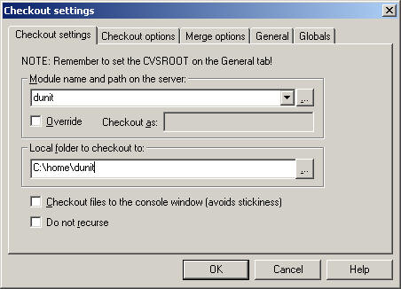
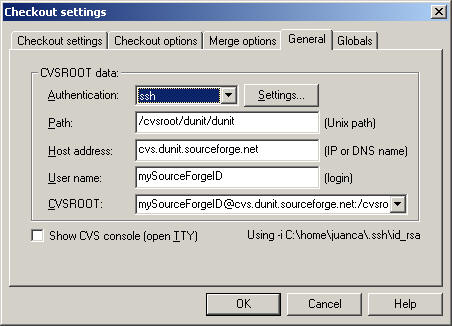

How to Access to the
DUnit CVS Repository
$Id: cvs_access.html,v 1.1 2003/02/15 04:25:40 juanco Exp $
CygWin Installation
CygWin needs to be installed in order to have access to a
working version of the Secure Shell protocol (SSH).
- Download and install CygWin from
http://www.cygwin.com/. Make sure that
the required programs, CVS, and SSH are selected for installation:
- Net/openssh
- Net/openssl
- Devel/cvs.
- Open Control Panel/System/Advanced/Environment
Variables and define the following User variables:
- CVS_RSH=ssh
- EDITOR=<path to your favourite text editor>
- In the same dialog, make sure that the PATH environment
variable includes the CygWin bin, usr\bin, and usr\local\bin directories.
- Open a Command Prompt (console window) and type:
cvs --help
you should get the CVS help output.
- Type the following SSH command:
ssh -l mySourceforgeId dunit.sourceforge.net
You should be prompted for a password. Press Ctrl+C to
abort the connection.
CygWin Repository Setup
- Open a Command Prompt
- Change to the directory where the local copy of the
repository should be created. For example:
cd c:\home
- Type the following CVS command:
cvs -d :ext:mySourceForgeId@cvs.dunit.sourceforge.net:/cvsroot/dunit checkout dunit
Type your password when CVS requests it, and wait. CVS
should start checking out a local copy of the repository to your hard drive
(e.g. to c:\home\dunit).
WinCVS
- You can download a Windows GUI for CVS from
http://www.wincvs.org. Go carefully
through the preferences dialog after installation.
- You can combine WinCVS with a visual Diff engine. One
of the options Component Software Diff for Windows available at
http://www.componentsoftware.com/products/csdiff/.
You'll have to set the options in the Admin/Preferences/WinCVS/External Diff
dialog, and in the
WinCVS Repository Setup
This is an alternative way to set up a local copy of the
CVS repository. If you successfully set up the local copy using CygWin, you
should skip this step.
- Launch WinCVS
- Select Create/Checkout Module from the WinCVS menu.
- Fill in the "Checkout settings" tab like this:

- Leave the "Checkout options" and the "Merge options"
tabs unchanged.
- Fill in the "General" tab as follows:

- Press the "Settings" button and write the complete path
to the CygWin version of the SSH program.
- Leave the "Globals" tab unchanged.
- Press OK.
- Provide the password when requested by the console
window (see below to learn how to avoid typing passwords).
- A local copy of the CVS repository will be checked out
to the designated directory on your local hard drive.
Setting Up No-Password Access to the Repository
- Use SSH to create your key pairs:
ssh-keygen -t rsa
- Copy the contents of the generated public key
id_rsa.pub file to clipboard.
- Go to
https://sourceforge.net/my/, select Account Options, scroll to the bottom
of the page, paste your public key on the text box, and press the Update
button.
- You should now be able to perform CVS operations on the
DUnit CVS repository without providing a password.
~o~